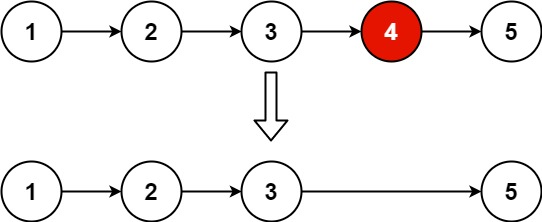

books / hot100 / 03-题解 / 07-链表
19. 删除链表的倒数第 N 个结点
题目与约束
给你一个链表，删除链表的倒数第 n个结点，并且返回链表的头结点。
示例 1：

输入：head = [1,2,3,4,5], n = 2
输出：[1,2,3,5]
示例 2：
输入：head = [1], n = 1
输出：[]
示例 3：
输入：head = [1,2], n = 1
输出：[1]
提示：
- 链表中结点的数目为
sz 1 <= sz <= 300 <= Node.val <= 1001 <= n <= sz
进阶：你能尝试使用一趟扫描实现吗？
核心不变量
fast 先走 n 步，随后保持固定间距。
完整推导
思路推导
-
直觉与痛点（两趟扫描法）：
最容易想到的方法是：先从头到尾遍历一遍链表，数一数总共有 L 个节点。然后算一下，倒数第 n 个，其实就是正数第 L - n + 1 个。然后再从头遍历一次，找到那个节点删掉。
痛点：需要遍历两次链表。虽然时间复杂度也是 O(N)，但面试官要求只遍历一次。
-
破局思路（快慢指针制造“距离差”）：
我们可以制造一把长度刚好为 n 的隐形尺子！
- 准备两个指针：
fast和slow。 - 先让
fast一个人往前跑 n 步。此时fast和slow之间刚好拉开了 n 个节点的距离差（这就形成了一把尺子）。 - 然后，让
fast和slow保持这个距离，同时往前跑。 - 当
fast跑到链表的最后一个节点时，由于尺子的长度是 n，slow刚好就被拖到了倒数第 n+1 个节点（也就是我们要删除的目标节点的前驱节点）！
- 准备两个指针：
-
灵魂防御（为什么需要 Dummy Node？）：
如果要删除的是链表的第一个节点（比如链表长度是 5，要删除倒数第 5 个），此时没有所谓的“前驱节点”，如果直接操作头节点
head会非常麻烦，必须写一堆if-else。引入虚拟头节点
dummy：让dummy.next = head。把fast和slow都从dummy开始起跑。这样即使要删除真正的head，slow也会安稳地停在dummy上，我们只需要执行slow.next = slow.next.next，逻辑完美统一！Java 实现（满分版）
/**
* Definition for singly-linked list.
* public class ListNode {
* int val;
* ListNode next;
* ListNode() {}
* ListNode(int val) { this.val = val; }
* ListNode(int val, ListNode next) { this.val = val; this.next = next; }
* }
*/
class Solution {
public ListNode removeNthFromEnd(ListNode head, int n) {
// 1. 祭出大杀器：虚拟头节点，化解删除头节点的极其繁琐的判定
ListNode dummy = new ListNode(-1);
dummy.next = head;
// 2. 快慢指针都站在起跑线（虚拟头节点）上
ListNode slow = dummy;
ListNode fast = dummy;
// 3. 快指针先跑 n 步，拉开距离差
for (int i = 0; i < n; i++) {
fast = fast.next;
}
// 4. 快慢指针同时往前跑，直到快指针跑到链表的最后一个节点
while (fast.next != null) {
fast = fast.next;
slow = slow.next;
}
// 5. 此时 slow 刚好停在待删除节点的前驱节点上，执行“跨越”删除操作
slow.next = slow.next.next;
// 6. 返回真正的链表头节点
return dummy.next;
}
}
复杂度
- 时间复杂度：O(L)，其中 L 是链表的长度。
fast指针刚好把链表遍历了一遍，严格满足“一趟扫描”的进阶要求。 - 空间复杂度：O(1)。我们仅仅用了
dummy、slow和fast三个指针变量。
易错点与扩展（你一定会踩的坑）
- 致命陷阱：千万不要返回
head！ - 在代码的最后，极其容易顺手写成
return head;。 - 为什么错？ 如果输入的链表是
[1]，n = 1。你要删除倒数第一个节点，也就是唯一的这个节点 1。删除后，链表变为空。如果你返回head，依然会返回[1]，答案错误。 - 正确做法：必须返回
dummy.next！因为当节点 1 被删除时，dummy.next已经指向了null，这才是完全正确的新链表头部。这就是dummy节点救你于水火之中的体现！
力扣原题
其他语言实现
C++ 实现
实现来源：代码随想录（programmercarl.com）
class Solution {
public:
ListNode* removeNthFromEnd(ListNode* head, int n) {
ListNode* dummyHead = new ListNode(0);
dummyHead->next = head;
ListNode* slow = dummyHead;
ListNode* fast = dummyHead;
while(n-- && fast != NULL) {
fast = fast->next;
}
fast = fast->next; // fast再提前走一步，因为需要让slow指向删除节点的上一个节点
while (fast != NULL) {
fast = fast->next;
slow = slow->next;
}
slow->next = slow->next->next;
Python 实现
实现来源：代码随想录（programmercarl.com）
# Definition for singly-linked list.
# class ListNode:
# def __init__(self, val=0, next=None):
# self.val = val
# self.next = next
Go 实现
实现来源：代码随想录（programmercarl.com）
/**
* Definition for singly-linked list.
* type ListNode struct {
* Val int
* Next *ListNode
* }
*/
func removeNthFromEnd(head *ListNode, n int) *ListNode {
dummyNode := &ListNode{0, head}
fast, slow := dummyNode, dummyNode
for i := 0; i <= n; i++ { // 注意<=，否则快指针为空时，慢指针正好在倒数第n个上面
fast = fast.Next
}
for fast != nil {
fast = fast.Next
slow = slow.Next
}
slow.Next = slow.Next.Next
return dummyNode.Next
}
C 实现
实现来源：代码随想录（programmercarl.com）
/**c语言单链表的定义
* Definition for singly-linked list.
* struct ListNode {
* int val;
* struct ListNode *next;
* };
*/
struct ListNode* removeNthFromEnd(struct ListNode* head, int n) {
//定义虚拟头节点dummy 并初始化使其指向head
struct ListNode* dummy = malloc(sizeof(struct ListNode));
dummy->val = 0;
dummy->next = head;
//定义 fast slow 双指针
struct ListNode* fast = head;
struct ListNode* slow = dummy;